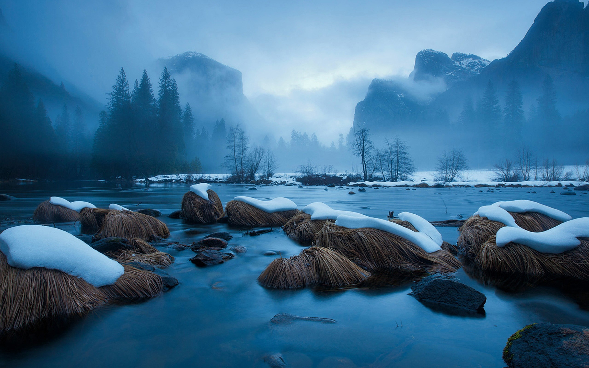

5 sfaturi pentru fotografierea pe vreme rece
1. Folosiţi un trepied
Nu va fi uşor să obţineţi o fotografie stabilă dacă vă tremură mâinile de frig. Un trepied uşor şi portabil va contribui la stabilizarea aparatului, astfel încât să puteţi fotografia cu încredere. Aveţi însă grijă să nu atingeţi trepiedul cu mâinile goale la temperaturi de sub zero grade, deoarece vă puteţi „arde” pielea.
Dacă sunteţi fotograf pasionat de iarnă, ambasadorul Canon şi fotograful de sporturi de iarnă Richard Walch recomandă să investiţi în mănuşi speciale pentru alpinism. Acestea vă vor lăsa vârfurile degetelor goale pentru a putea fotografia şi vă vor proteja mâinile între fotografii.
2. Luaţi baterii suplimentare
Vremea rece vă va descărca bateriile mai rapid decât în mod normal. Aşadar, păstraţi camera şi bateriile în geantă, unde vor rămâne mai calde mai mult timp. De asemenea, nu uitaţi să luaţi cu dvs. de două ori mai multe baterii decât de obicei, astfel încât să puteţi realiza în continuare acele fotografii grozave.

3. Rotiţi inelele manual
Dacă utilizaţi aparatul foto în aer liber şi nu aţi întors inelul de focalizare de mână sau nu aţi utilizat focalizarea automată de ceva vreme, inelele de focalizare şi de zoom ale obiectivului se pot bloca. Pentru a evita aceasta, ţineţi aparatul foto învelit şi într-o geantă de bună calitate când nu îl utilizaţi sau acoperiţi-l dacă fotografiaţi atunci când ninge. Alternativ, puteţi să rotiţi frecvent inelele de focalizare şi de zoom folosind motorul AF sau să le întoarceţi cu mâna.
4. Aveţi grijă la condens
Aducerea aparatului foto dintr-un mediu rece în unul cald va provoca condens, ceea ce vă poate deteriora echipamentul. Sfatul lui Richard Walch este următorul: „Când mergeţi să luaţi prânzul, rămâneţi afară sau lăsaţi rucsacul afară. Dacă intraţi la căldură şi încercaţi să vă verificaţi imaginile, totul s-a terminat. Aparatul foto se va aburi, obiectivul se va aburi şi echipamentul va avea de suferit. Trebuie să păstraţi aparatul foto într-o singură zonă de temperatură.”
5. Utilizaţi parasolarul
În condiţii de ninsoarea sau zăpadă viscolită, parasolarul poate împiedica depunerea zăpezii pe obiectiv, explică Richard Walch. „Parasolarul devine extrem de important pentru a vă asigura că zăpada nu ajunge pe obiectiv. Dacă folosiţi o protecţie bună pentru obiectiv, puteţi ajunge departe.” Aşa că instalaţi parasolarul şi luaţi cu dvs. cel puţin câteva cârpe pentru obiectiv pentru a usca geamul înainte de a pune aparatul înapoi în geantă.